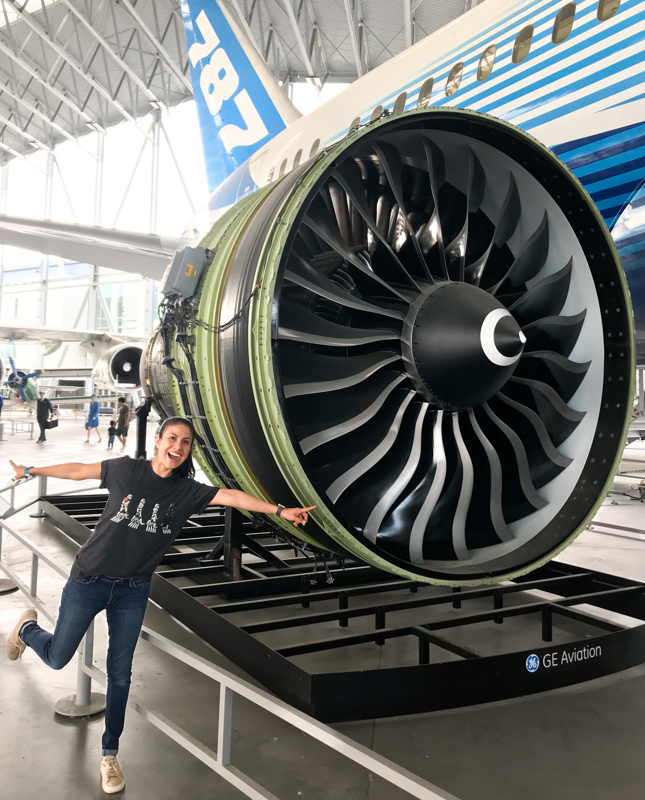

I am mexican by birth, american by choice and mom by luck.
Most of my experience has been in the Aviation Industry, where I earned experience doing design, implementation and testing to certify the Controls Logics for the Boeing 787 (GEnx-1B) aircraft engine.
During my time at GE Aviation, I learned important skills like complex problem solving, detail oriented, teamwork, project management, and to deliver success to customers after understanding their needs.
You can visit my LinkedIn profile for a deeper description about my responsibilities at GE Aviation.

Even when I enjoyed working in the Aviation Industry, I found that having skills as Software Developer, you can work on any field and the type of problems to solve will always be varied. I love this because that always keeps things interesting.
No matter how hard the problem can be, once you come up with a solution it is extremely rewarding and satisfying. I love how the solutions to such problems using software have big impact around the world and when used correctly, it makes things more
inclusive and accessible for every person on the planet. I cannot wait to be part of that by becoming a Software Developer. I want to be able to build, innovate and contribute to our planet in a positive way.
As a mom, I have managed to keep organized enough to continue learning about programming. Before joining ADA, I took the initiative to learn C#, HTML and CSS basics by my own. I completed the learning path
“Become a Software Developer” in LinkedIn Learning. After that, I was able to code personal projects from scratch to apply the knowledge that I learned,
which has been a big personal milestone in my journey to become a Software Developer. You can find these projects in the portfolio section.
Now, I am a Software Developer student at ADA Deveopers Academy. I have been so lucky to have the opportunity to continue learning from different wonderful instructors.
I am beyond grateful to be part of this incredible organization that has empowered me with knowledge to achieve my dream to become a Software Developer.